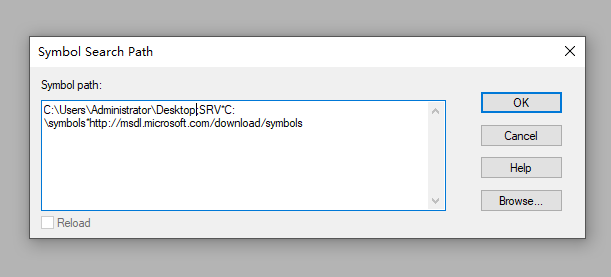

用户态调试器是调试一个单目标的用户态进程,我的理解就是针对一个程序进行调试或者修改其中的状态
内核态调试器就是分析计算机整体的,主要是用于驱动程序开发的
调试器命令是以可执行文件的方式实现的,大多数短命令都是内置命令,还有一种元命令前缀是句号' . ',还有一种是扩展命令,前缀是' ! ',这些命令是被包含在与调试器独立的dll中使用格式。
此小节记录工作中经常用到的调试方法。
当然也不要妄想只是用windbg就完全解决bug,这种方法仅仅比输出日志方便点。
1.设置路径
在使用windbg调试代码之前,需要设置一些路径,这样windbg才能发挥作用
(1) .srcpath设置源代码路径
(2) .exepath设置可执行文件的路径
(3) .symfix设置设置符号服务器(不常用)
(4) .sympath设置符号文件的路径(常用)
注意,设置完成后需要执行.reload命令
有时还需要windows操作系统中的符号文件
SRV*C:\symbols*http://msdl.microsoft.com/download/symbols
解释 : 将从http://msdl.microsoft.com/download/symbols 网址下载微软的PE文件对应的符号文件,
并且缓存到C:\symbols目录下。虽然有时候调试自己的工程不会用到微软的pdb,但是加上也不错:-)

2.常用命令
lm 观察模块信息,包括调试符号
.reload 重新加载设置
!sym noisy 执行命令时可以显示更多细节信息
!sym quite 取消显示更多细节
x 模块名称(不写后缀)!符号名称 查询模块中(比如exe、dll)的符号(函数名 变量)
bp 增加软件断点(不止这一种方法)
bl 列出断点
bc 清除断点后面需要加断点序号
vertarget 会显示调试目标所在操作系统的版本
dv /i 变量 显示变量类型和地址
dv /v 变量 显示存储的地址
lmf 列出当前进程中加载的模块
.cls 清屏幕
3.程序调试--打断点
详细介绍windbg如何使用打断点调试程序,首先在进行调试之前记得要设置pdb的路径(有源码路径最好),设置路径请参考上面的内容
当程序启动以后,挂载程序,然后.reload加载资源(这就是上面设置路径的作用)。接着就可以加断点了,这里有三种加断点的方式,方式如下:
(1) bp
bp命令是在某个地址下断点,可以 bp 0x7783FEB 也可以 bp MyApp!SomeFunction。对于后者,WinDBG会自动找到 MyApp!SomeFunction 对应的地址并设置断点,还有一种方法是直接设置某个文件的某行为断点bp xxxxx.cpp:nnnn。但是使用bp的问题在于
(1)当代码修改之后,函数地址改变,该断点仍然保持在相同位置,不一定继续有效
(2)WinDBG不会把bp断点保存工作空间中
(2) bu
bu命令是针对某个符号下断点。比如bu MyApp!SomeFunction在代码被修改之后,该断点可以随着函数地址改变而自动更新到最新位置。而且bu断点会保存在WinDbg工作空间中,下次启动Windbg的时候该断点会自动设置上去,这个好像用不了通配符了
(3) bm
bm命令也是针对符号下断点。但它支持匹配表达式。很多时候你下好几个断点。比如,把所有以CreateWindow开头的函数都下断点:bm 模块!*函数*
(4) 在程序启动时自动挂载程序以及加断点
有时候,我们需要打断点的位置在程序启动后很短的时间内就执行过了,比如构造或者初始化程序加载模块等,这些程序往往只执行一次,这样我们就不能在程序运行后手动增加断点(这样太慢了),所以需要系统帮助我们自动挂载程序。操作如下:
1. 在注册表中创建一项,在HKEY_LOCAL_MACHINE/SOFTWARE/Microsoft/Windows NT/CurrentVersion/Image File Execution Options/下创建名为xxxx.exe(要使用的程序名称)的项。
2. 然后在新创建的这一项下创建一个字符串值Debugger,值为windbg的位置,例如 "C:/Program Files/Debugging Tools for Windows/windbg.exe"。
如果不再需要,删除注册表项即可
按照上述步骤操作后,程序已经加载上了,此时程序还没有运行,这时候我们需要设置windbg令其在加载到我们需要打断点的模式时自动停止,等待我们进行操作。当然,如果只是一个单独的程序,那么直接在加载上后设置断点就好了
sex ld xxxx(模块名称)
(5) 条件断点
条件断点使用在一下情景,当我们需要在某个条件状态下才需要观测某个代码位置,而此位置又是被频繁执行的(比如1秒中执行100次),这样直接设置断点调试那么每次都会进入断点。所以这里使用条件断点就很方便。
可以使用数值型变量作为判断条件,这算是最简单的使用
bp `mainwindow.cpp:77` ".if(poi(_findpos) == 0n1){.echo findpos==1 } .else{gc}"
// bp 断点命令也可以使用上面提到过的其他断点命令
// mainwindow.cpp:77 打断点的位置
// ".if() {} .else{} " 这是条件断点判断的标准写法之一,我觉得这个挺好用的
// poi(_findpos) _findpos在代码程序中被视为数值。但是windbg中使用MASM语法,_findpos被理解为地址,需要使用poi解引用
// MASM语法有兴趣可以看看
// == 0n1 数值比较,也属于MASM语法
//.echo 元命令,这个还有很,这里只能输出原样的字符串,输出变量值还需要再研究
//gc 这就是windbg内置的命令,从条件断点恢复执行
4.查看变量值
在进入到断点位置时,会有查看变量的时候,此时可以使用快捷键alt+2或者alt+3打开watch或者local窗口查看,作用大同小异吧。
原来一直纠结用什么命令查看变量,现在不纠结了,有图形化的界面用更方便。
注意,只是声明而没有被使用的变量是查看不了值的,我猜测应该时编译器进行优化了吧。